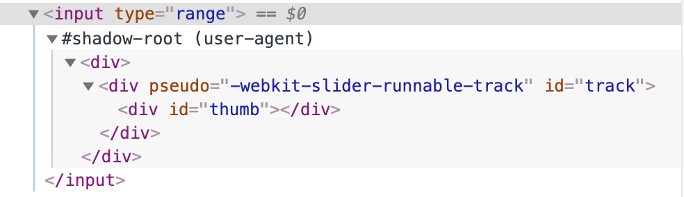

Hello!
I’m Robin Dykema.
I’m a UI engineer at Taulia in Austin, TX.
What we will cover today
- A background of Shadow DOM
- What is the shadow DOM?
- What problems can these technologies solve?
1. What are web components?
Web components.
Web components are framework-agnostic components that can be dropped into any app. They use native JavaScript and do not require any outside libraries.
They're compatible with current and future frameworks.
"Web components are a set of web platform APIs that allow you to create new custom, reusable, encapsulated HTML tags to use in web pages and web apps. Custom components and widgets build on the Web Component standards, will work across modern browsers, and can be used with any JavaScript library or framework that works with HTML."
Source: webcomponents.org
Web components consist of four separate technologies that can be used together
- Custom elements
- Shadow DOM
- HTML templates
- ES Modules
You can use them together or separately.
Custom elements
"The Custom Elements specification lays the foundation for designing and using new types of DOM elements."
Source: webcomponents.org
Shadow DOM
"The shadow DOM specification defines how to use encapsulated style and markup in web components."
Source: webcomponents.org
HTML template
"The HTML template element specification defines how to declare fragments of markup that go unused at page load, but can be instantiated later on at runtime."
Source: webcomponents.org
ES Modules
"The ES Modules specification defines the inclusion and reuse of JS documents in a standards based, modular, performant way."
Source: webcomponents.org
Web components are easier for humans to read.


What are web components NOT?
Web components are not
- A framework
- A rendering library
- Opinionated
- Going to replace React/Angular/Vue/____
Let's look at some web components code!
Uhhhh... isn't that a lot of boilerplate code?
Libraries to help you build web components:
Libraries of already built web components:
Browser support

Yes, you will need a polyfill if you want to support IE11.
*This is a great use case for using a tool such as Stencil that bundles the polyfills you need.
Final takeaways on web components
- Web components consist of four different technologies: custom elements, shadow DOM, HTML templates, and ES modules.
- Web components are future-proof.
- Web components are not out to replace React/Angular/etc, but can help share code between React and Angular code bases.
You can write a component without using the shadow DOM and you can use the shadow DOM without writing a single component.
What is the shadow DOM?


The shadow DOM is not that scary, I promise.
Before we answer what the shadow DOM is... what is the DOM?
And the light DOM?
And the virtual DOM?
HOW MANY DOMS ARE THERE?!?


Shadow DOM is NOT the same as the DOM.
It's also NOT the same as the virtual DOM.
The DOM (Document Object Model)

The DOM (Document Object Model)
The DOM is also known as the light DOM when used in comparison to the shadow DOM.
Virtual DOM
 Source:
https://www.oreilly.com/library/view/learning-react-native/9781491929049/ch02.html
Source:
https://www.oreilly.com/library/view/learning-react-native/9781491929049/ch02.html
Shadow DOM

Several HTML elements use the shadow DOM.

Dev tools -> settings -> show user agent shadow DOM
input type="range"
video

Shadow DOM vocabulary lesson
- Shadow host: The light DOM node that the shadow DOM is attached to
- Shadow tree: The DOM tree inside the shadow DOM
- Shadow boundary: the place where the shadow DOM ends, and the light DOM begins
- Shadow root: The root node of the shadow tree
 Source:
https://developer.mozilla.org/en-US/docs/Web/Web_Components/Using_shadow_DOM
Source:
https://developer.mozilla.org/en-US/docs/Web/Web_Components/Using_shadow_DOM
The shadow DOM simplifies CSS.
The shadow DOM simplifies CSS by letting you:
- use simple CSS selectors
div.main > div ~ #main ul li.selected > a[href*=”li-”] + span.lg {
background-color: white;
}
span {
background-color: white;
}
The shadow DOM simplifies CSS by letting you:
- use simple CSS selectors
- use more generic id/class names
The shadow DOM simplifies CSS by letting you:
- use simple CSS selectors
- use more generic id/class names
- not worry about naming conflicts
You can use Bootstrap and name a class "container"!
A note on accessibility...
For those using assistive technologies to read web pages, the entire document (shadow and light DOM) is read as rendered, as one tree.
Final takeaways
- Takeaway 1
- Takeaway 2
- Takeaway 3
Thanks!
Message me or find my slides (with additional resources) on Twitter at
@robindykema
Resources
- webcomponents.org
- Google web fundamentals: Web components
- Web Components the Right Way: A curated list of awesome web components resources
- ES modules: A cartoon deep dive
- MDN Docs: Introduction to the DOM
- MDN Docs: Using the shadow DOM